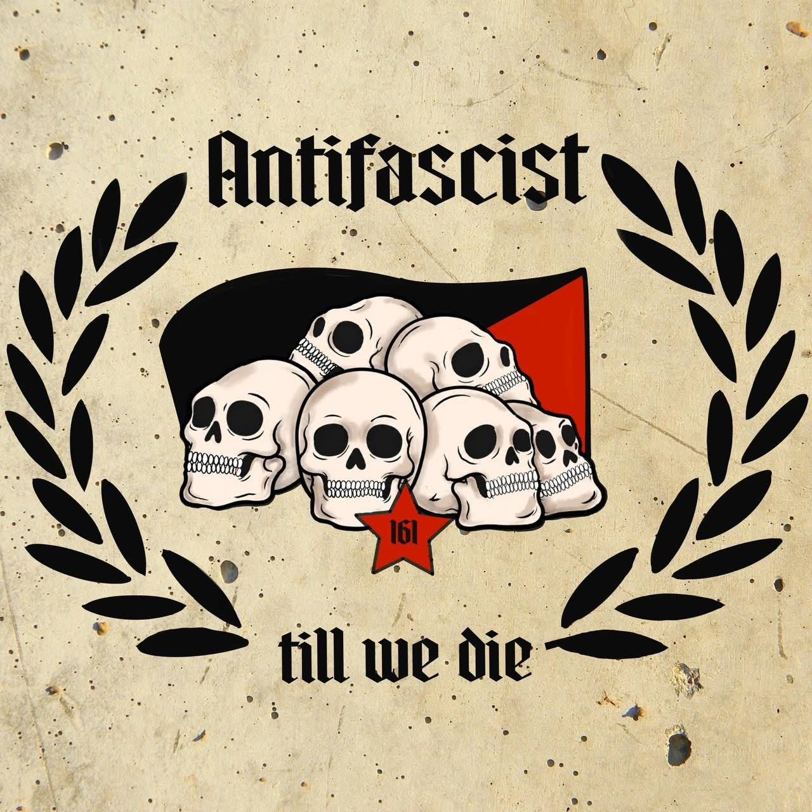

Review
Oi!Gebroi - Antifascist till we die

Oi!Gebroi sparen sich das Ratespiel.
Niemand muss erst drei Interviews, zwei Festivalberichte und einen halben Szene-Stammbaum lesen, um herauszufinden, wo diese Band steht.
Der Titel erledigt das schon ziemlich alleine:
Antifascist till we die.
Das ist keine ausgeklügelte Theoriearbeit. Eher ein Bierdeckel, auf dem in dicken Buchstaben steht: Faschos raus, Rest kann später sortiert werden.
Oi!Gebroi aus Köln/Bonn machen authentischen antifaschistischen Oi!-Punk. Schmutzig, grob und hart. Wie die Arbeiterklasse selbst.
Die raue Stimme und die Chöre passen genau dahin. Und dann ist da noch die Trompete. Die läuft nicht einfach dekorativ mit, sondern setzt einen schön schmutzigen Kontrast zum Rest.
Das könnte schnell albern werden. Hier bleibt es zum Glück eher Störung als Karneval.
Gerade dadurch hebt sich der Song vom nächsten vorhersehbaren Mitgröl-Oi! ab, bei dem man nach dreißig Sekunden schon weiß, wann der Chor einsetzt.
Über den Inhalt brauchen wir eigentlich nicht groß zu reden. Hier liest ohnehin kein Fascho mit.
Und falls doch:
Verpiss dich.
Eine Sache ist mir trotzdem wichtig. Es tut immer wieder gut, wenn Skins und die zahlreichen Untergruppen dieser Kultur klar zeigen, dass Glatze nicht automatisch Nazi heißt. Eigentlich müsste man das längst nicht mehr erklären.
Offenbar muss man es trotzdem noch tun.
"Antifascist till we die" ist eindeutig und direkt. Geile Nummer.
Oi!Gebroi - Antifascist till we die auf YouTube
Oi!Gebroi auf Bandcamp